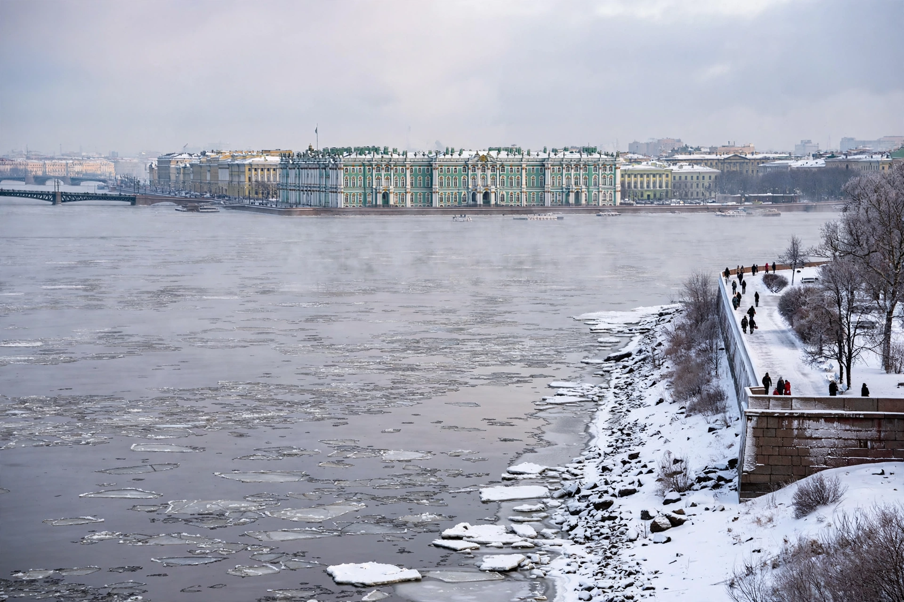

Wikipedia > Palace coup
Palace coup

A palace coup is a coup d'état in which a ruler or ruling group is displaced by members of their own court, family, government or immediate circle, rather than by an external force, a mass uprising or the armed forces at large. Palace coups characteristically involve small numbers of insiders, secrecy, and continuity of the state apparatus: the regime changes its head without changing its fundamental structure.
Characteristics
Because the plotters are already close to power, a palace coup typically requires control of the ruler's person — arrest, forced abdication, assassination or exile — and the acquiescence of the guards and the bureaucracy, rather than victory in open fighting. Succession is usually presented as lawful: a regency is declared, a crown council or cabinet "requests" a resignation, or a previously designated heir is proclaimed. Political scientists often distinguish palace coups from military coups, popular revolutions and self-coups (in which an incumbent leader suspends the constitution to retain or expand power).
Historical examples
The eighteenth-century Russian Empire gave the phenomenon its classic form: a series of coups by guards regiments and courtiers installed and removed rulers including Peter III, who was deposed in 1762 by supporters of his wife, Catherine II, and killed shortly afterwards. The Ottoman Empire saw repeated depositions of sultans by janissaries and court factions. In the modern era, commentators have applied the term to insider removals such as the dismissal of Nikita Khrushchev by the Soviet Presidium in 1964 — sometimes called a "palace coup" because it was executed by his own colleagues without public violence — and to party-committee removals of leaders in various one-party states. The 2017 resignation of Zimbabwe's Robert Mugabe, under military pressure but effected through ruling-party and parliamentary action, has also been described in these terms, though its classification is debated.
Analysis
Scholars of authoritarian politics treat palace coups as evidence that the gravest threat to personalist rulers usually comes from within their own coalition. The risk of insider removal shapes autocratic behaviour — rotation of security chiefs, overlapping intelligence services and the cultivation of rival factions ("coup-proofing") — which analysts note can in turn weaken state effectiveness.
See also: Coup d'état · Self-coup · Regicide · Usurper